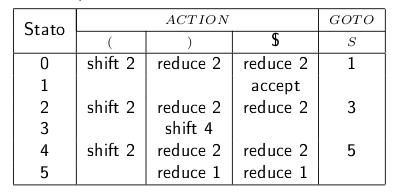
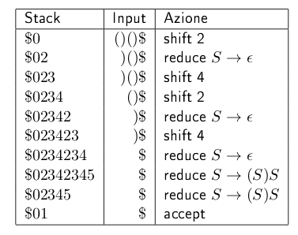
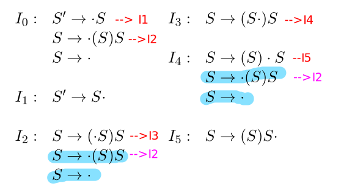
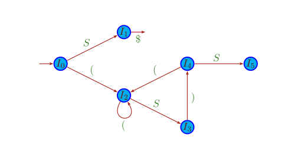
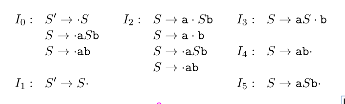
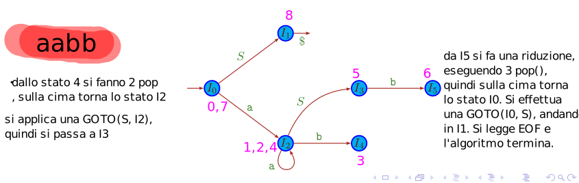

Parser SLR(1), 23/11/22
Info
Appunti della lezione in presenza del 23/11/22. Ci si è concentrati principalmente sugli esempi riportati sulle slide, per cercare di capire in modo chiaro l'algoritmo di parsing.
Table of Contents
1 Introduzione
Vediamo ora un tipo di parser LR, chiamato SLR(1) (Simple LR). Le sue caratteristiche sono le seguenti:
- Si basa sulla lettura di una tabella di parsing, che viene costruita solamente in base alle produzioni della grammatica. Questo processo di generazione verrà trattato successivamente;
- Si interfaccia con uno stack su cui vengono inseriti man mano gli stati dell'automa;
- Ovviamente questo parser è del tipo SHIFT*/*REDUCE:
- Shift \(\rightarrow\) viene consumato un carattere dell'input e viene inserito nello stack lo stato corrente;
- Reduce \(\rightarrow\) viene effettuata una riduzione: vengono
fatte una serie di
pop()dallo stack in base ad una produzione specificata nella tabella, per poi spostarsi su un'altro stato in base al contenuto della colonna GOTO.
Si prendano queste informazioni come un'introduzione generale al funzionamento, ci si soffermerà sui dettagli successivamente.
2 L'algoritmo data la tabella di parsing
Si consideri la seguente grammatica:
\begin{align} & 1) \ S \rightarrow (S)S \\ & 2) \ S \rightarrow \epsilon \end{align}la tabella di parsing che viene costruita a partire dalla grammatica (vediamo successivamente come) è la seguente:

Ad un generico passo, il parser dovrà consultare la tabella di parsing, tenendo conto dello stato in cui è attualmente (colonna "Stato") e del prossimo carattere dallo stream di input (Prima riga sotto "ACTION"). Possono verificarsi le seguenti casistiche:
- La casella è vuota: viene lanciato errore. Non esiste un'azione per quella combinazione di stato/input;
- La casella contiene sia un'azione shift che un'azione reduce: in questo caso si ha un conflitto shift/reduce. Il parser non sa quale delle due azioni svolgere, quindi la grammatica iniziale era ambigua.
- La casella contiene (ad esempio)
shift 2. Il parser avanza il puntatore di input e inserisce lo stato 2 nello stack. - La casella contiene (ad esempio)
reduce 1. In questo caso il parser applica una "riduzione", scorrendo la produzione 1 al contrario. In particolare:- vengono effettuate 4 pop (perchè la produzione 1 contiene 4 caratteri);
- si guarda qual'è lo stato in cima allo stack, supponiamo che sia lo stato 4;
- viene inserito nello stack lo stato 5 ( visibile nella colonna GOTO, in corrispondenza della riga 4).
Esempio di esecuzione su input "()()" \(\Downarrow\) 
3 Creazione della tabella di parsing
3.1 Automa LR(0)
Il primo passo della generazione della tabella di parsing consiste nella costruzione di un'automa a stati finiti di tipo LR(0), perchè non prevede nessun lookahead. Viene realizzato semplicemente guardando una versione "modificata" della grammatica presa come riferimento.
In particolare, alla grammatica vengono associati degli item,
ossia degli oggetti molto simili alle produzioni stesse, ma in
cui viene inserito un "." dopo ogni carattere. Ad esempio, gli
item per la produzione \(S \rightarrow (S)S\) sono i seguenti:
In particolare, il punto indica che si è riconosciuto tutto ciò che si trova alla sua sinistra, e ci si aspetta di riconoscere quello che si trova alla sua destra. Un'item con il punto in fondo indica che il processo di riconoscimento della parte destra è terminato, e che quindi si potrà applicare una riduzione. Infatti se ci si pensa, una volta che si è riconosciuta una sequenza del tipo
\begin{equation} S \rightarrow (S)S. \end{equation}allora è come se fosse stata riconosciuta una semplice \(S\) (sequenza bilanciata di parentesi).
Si procede come segue, considerando (ad esempio) la solita grammatica che riconosce sequenze di parentesi bilanciate:
- Si "aumenta" la grammatica, inserendo la produzione
- Si definisce il primo stato dell'automa, ponendo il "." di fronte a ogni produzione della grammatica.
- Si fa avanzare il "." per ogni item presente nello stato. Dal primo item dello stato \(I_{0}\) si ottiene lo stato I1, e dal secondo item si ottiene lo stato \(I_{2}\). Dall'ultimo item non si ottiene nulla, perchè il punto ha già raggiunto la fine della produzione.
- Si applicano le chiusure. Se il "." si trova davanti ad un carattere non terminale, si aggiungono allo stato tutti gli item ottenuti dalle produzioni del non-terminale in questione inserendo il punto all'inizio. Per \(I_{1}\) non si fa nulla, mentre \(I_{2}\) diventa:
- Si procede in questo modo, analizzando ogni nuovo stato che viene generato. Gli item colorati rappresentano quelli aggiunti tramite closure.\(\Downarrow\)
 Questa collezione di item da origine all'automa a stati finiti in figura, abbastanza intuitivamente: 
Un'altro esempio, considerando la grammatica che genera il linguaggio \(\{a^{n}b^{n} | n>=1\}\):
\begin{align} & S' \rightarrow S\\ & S \rightarrow aSB\\ & S \rightarrow ab\\ \end{align}I numeri viola indicano la "sequenza" di stati, le note a margine dovrebbero aiutare:


3.2 Definizione della tabella
La definizione della tabella è abbastanza lineare, c'è solo da effettuare un controllo aggiuntivo per quando riguarda l'inserimento delle reduction.
Per ogni stato \(I_{j}\) dell'automa prodotto precedentemente, si guardano tutte le transizioni uscenti. Vengono di seguito elencate le operazioni "facili":
- Per ogni transizione uscente (da \(I_{j}\) \(I_{k}\)) etichettata con un terminale \(x\), poniamo ACTION \([j,x]\) = shift \(k\)
- Per ogni transizione uscente (da \(I_{j}\) \(I_{k}\)) etichettata con un non-terminale \(X\), poniamo GOTO \([j,X]\) = \(k\);
ora l'operazione leggermente delicata:
- Se nell'insieme di item corrispondenti ad \(I_{j}\) esiste un item del tipo \(A \rightarrow \alpha\). (da notare il punto alla fine, significa che è stata riconosciuta una sequenza corretta quindi c'è da effettuare una reduction), allora si pone ACTION \([j,x]\) = reduce (enum \((A \rightarrow \alpha)\)) per ogni simbolo \(x\) nel FOLLOW(A). Con enum enum \((A \rightarrow \alpha)\)) si intende il numero corrispondente alla produzione, secondo loro ordinamento arbitrario. E' semplicemente un modo per identificare la produzione da usare per la riduzione. Per capire al meglio questo controllo sui FOLLOW(A), si immagini che dopo la riduzione venga inserito il non-terminale A nell'"input" al posto dei caratteri che hanno portato alla terminazione della produzione. Per esempio, dopo aver riconosciuto la prima sequenza di parentesi, si ottiene (idealmente)
immaginiamo ora che al posto della prima parentesi alla destra della S ci sia un carattere non presente nel follow di S, come ad esempio il "+" \(S+())\) In questo caso non avrebbe avuto senso applicare la reduce, dato che il parser finirebbe in stato di errore.
La tabella risultante rispetto alla grammatica che riconosce le parentesi bilanciate è infine la seguente, già mostrata in precedenza: